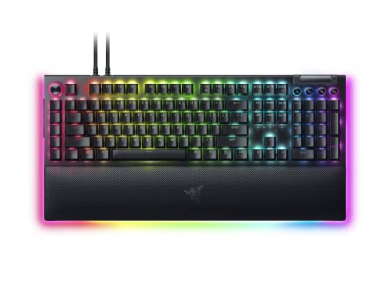
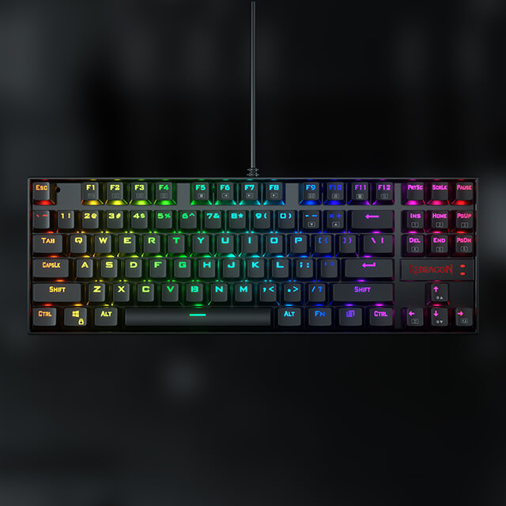

Los teclados mecánicos son una elección popular para gamers, programadores y escritores gracias a su durabilidad, comodidad y personalización. A continuación, exploramos algunos de los mejores teclados mecánicos y sus características para ayudarte a elegir el ideal para ti.
1. Para Gamers: Razer BlackWidow V4 Pro
Este teclado está diseñado específicamente para gamers. Cuenta con switches rápidos y retroiluminación RGB personalizable, además de teclas adicionales para macros que te dan una ventaja competitiva.
2. Para Programadores: Keychron K8 Pro

Un teclado inalámbrico compacto con soporte para múltiples dispositivos. Perfecto para programadores que buscan comodidad y funcionalidad en un diseño minimalista.
3. Para Escribir: Logitech MX Mechanical

Diseñado para quienes pasan horas escribiendo, este teclado ofrece switches silenciosos, una disposición ergonómica y una experiencia de escritura fluida.
4. Personalizable: Glorious GMMK Pro

Para los entusiastas que quieren personalizar cada detalle, el Glorious GMMK Pro permite cambiar switches, teclas y más, ofreciendo una experiencia completamente a medida.
5. Económico: Redragon K552 Kumara
Un teclado mecánico asequible pero de alta calidad. Ideal para quienes desean probar teclados mecánicos sin gastar demasiado.